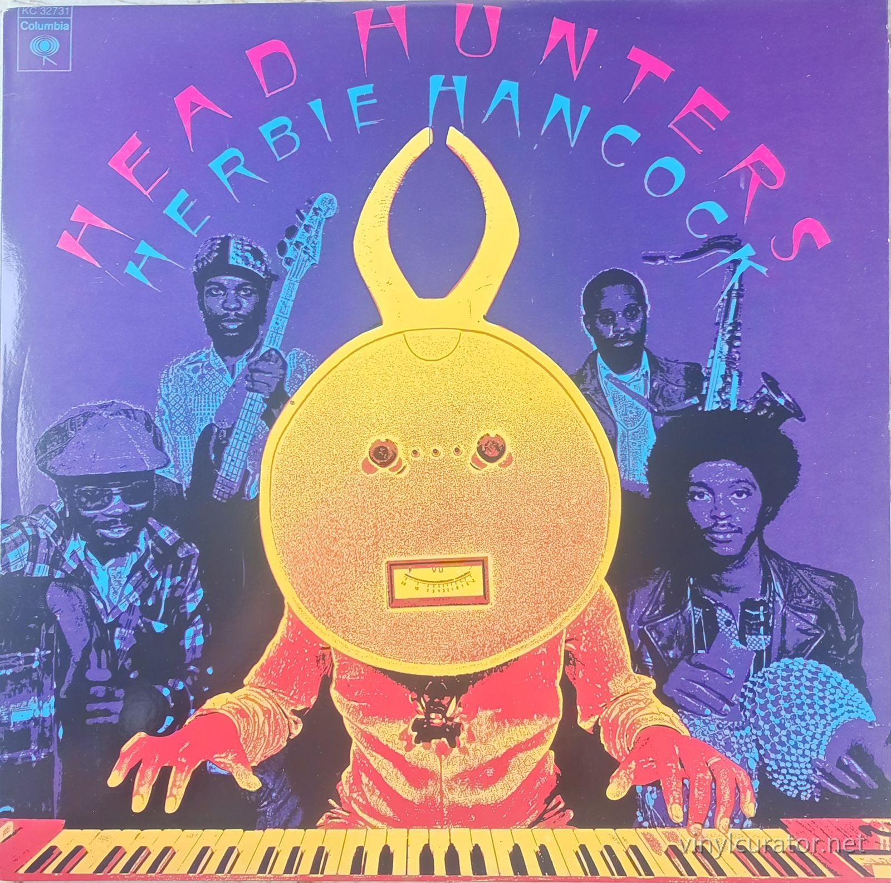
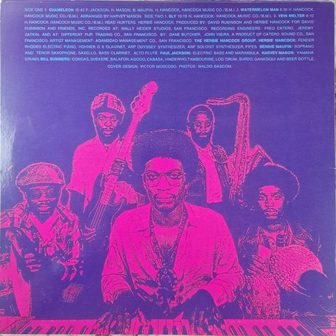
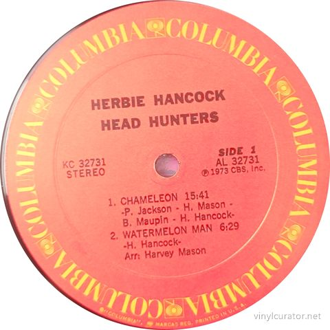
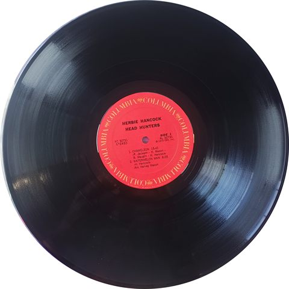
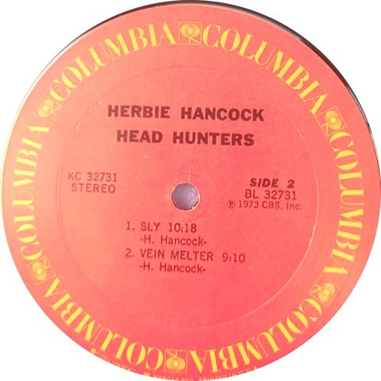
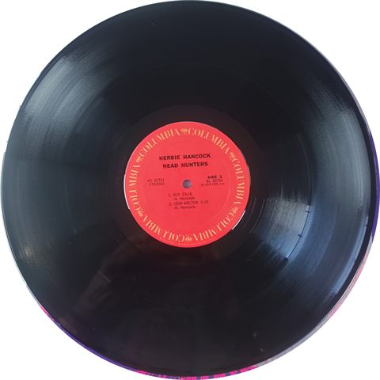
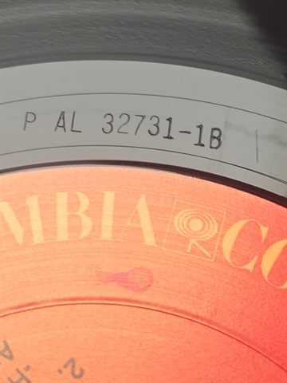
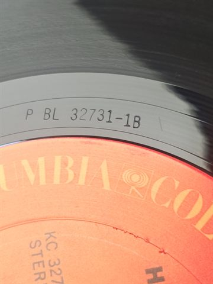

Thank you for buying this record. What follows is its documentation: the
pressing identified, the matrix / runout transcribed by hand from the dead
wax, and the condition as assessed before it was listed. It is yours to keep
with the record.
— Paul, Vinyl Curator
Herbie Hancock
Head Hunters
1973 · Columbia KC 32731 · Stereo · US (Columbia Records Pressing Plant, Pitman, NJ) · LP · 33 1/3 RPM








Pressing details
Label
Columbia
Catalogue number
KC 32731
Year
1973
Mono / Stereo
Stereo
Country
US (Columbia Records Pressing Plant, Pitman, NJ)
Format
LP
Speed
33 1/3 RPM
Genre
Jazz-Funk / Jazz Fusion
Producer
David Rubinson, Herbie Hancock (produced for David Rubinson And Friends, Inc.)
This record has been sold. Its documentation stays here.
Matrix / Runout
Side A: AL 32731-1B P
Side B: BL 32731-1B P
Condition
Cover
NM
Vinyl
NM
Variant chronology
1973 - Orange/red Columbia label, Pitman plant, -1A stamper, "P" etched runout
1973-74 - Orange/red Columbia label, Pitman plant, -1B stamper, "P" etched runout <- this copy
1973-74 - Orange/red Columbia label, Santa Maria, CA plant, "S" etched runout
1973-74 - Orange/red Columbia label, Terre Haute, IN or other secondary US plants
1970s UK/European Columbia/CBS pressings
c. 1980s-90s - Later Columbia reissues, black label
1997 - Columbia/Legacy CD remaster (reference only, not vinyl) - n/a
2011 - Music On Vinyl 180g reissue
2021 - Analogue Productions 200g LP (Ryan K. Smith mastering)
This Pressing
1st-generation 1973 Columbia pressing (stereo) - orange/red Columbia label, Pitman plant "P" stamp, -1B stamper.
The Album
Head Hunters was Herbie Hancock's twelfth album as a leader, recorded in September 1973 at Wally Heider Studios and Different Fur Trading Co. in San Francisco and released on Columbia that October. It marked a deliberate pivot away from the abstract, electric-jazz explorations of his Mwandishi sextet toward a leaner, funk-driven sound built around a new group, the Headhunters, with Bennie Maupin carried over on reeds and new members Paul Jackson, Harvey Mason and Bill Summers supplying deep electric bass grooves and African-derived percussion. Hancock has said he wanted to reconnect with a broader, more danceable audience and drew explicitly on Sly Stone's rhythmic vocabulary, most audibly on the side-two track named in Stone's honor. The opening fifteen-minute
Tracklist
Side 1
1. Chameleon 15:41
2. Watermelon Man 6:29
Side 2
1. Sly 10:18
2. Vein Melter 9:10
The Label
This copy carries the classic 1973-era Columbia orange/red label with the repeating boxed "walking eye" logo around the rim and "Printed in U.S.A." rim text, the standard Columbia jazz/pop label design in use from about 1970 into the early 1980s, matching the album's October 1973 release. The typed runout etchings AL 32731-1B P (side 1) and BL 32731-1B P (side 2) carry the "P" plant designator for the Columbia Records Pressing Plant in Pitman, NJ, one of several US plants (alongside Santa Maria, CA and others) that Columbia used simultaneously to meet demand for this hit crossover album. The "-1B" stamper suffix, rather than the earliest "-1A" found on some copies, places this as a slightly later stamper/plating generation off the same lacquer rather than the very first Pitman stamper run, but still within the original 1973 pressing cycle since the label carries the ℗ 1973 CBS, Inc. line and none of the later black-label or reissue typography.
Fidelity
The original 1973 Columbia cut (engineered by Fred Catero/Jeremy Zatkin at Wally Heider and Different Fur) is prized by collectors for its warm, punchy analog low end on Paul Jackson's bass and a natural presence on Hancock's electric keyboards; Pitman pressings are generally considered solid, consistent quality among Columbia's early-70s plants. Steve Hoffman forum consensus rates most Columbia/Legacy CD remasters (1997 Mark Wilder, 2003) as overly compressed and "brickwalled," making a clean original vinyl pressing like this one the preferred way to hear the album's dynamics. The 2021 Analogue Productions 200g LP/SACD (mastered by Ryan K. Smith from analog tapes) is widely regarded by forum members as the best modern audiophile option, generally ranked above the CD reissues but debated as either comparable to or slightly cleaner than a top-condition original Columbia pressing; a genuinely mint original like this -1B Pitman copy remains a strong, historically accurate reference point in that hierarchy.
Notes
1973 Columbia KC 32731 stereo, Pitman (NJ) pressing plant. Runout etchings AL 32731-1B P / BL 32731-1B P confirm the "P" Pitman plant code and a second-generation (-1B) stamper rather than the earliest -1A cut, but the ℗ 1973 CBS, Inc. label text and standard-issue orange/red Columbia label rule out any later reissue. This is a legitimate original 1973 US pressing, just not the very first stamper off the lacquer.
Documenting collections
I do this work for other people’s collections too — documenting a
collection record by record, researching individual pressings, and preparing
collections for sale or for insurance. If you have a collection you would like
documented, or a record you want identified properly, get in touch:
email
This record’s page: https://vinylcurator.net/albums/herbie-hancock-head-hunters-1973/